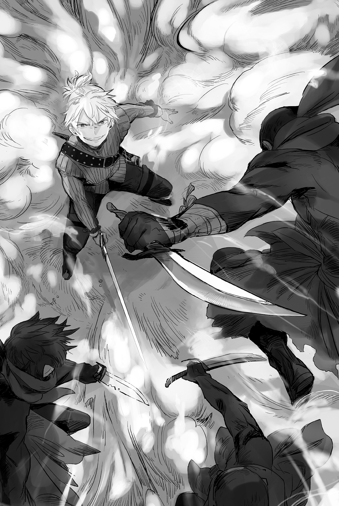
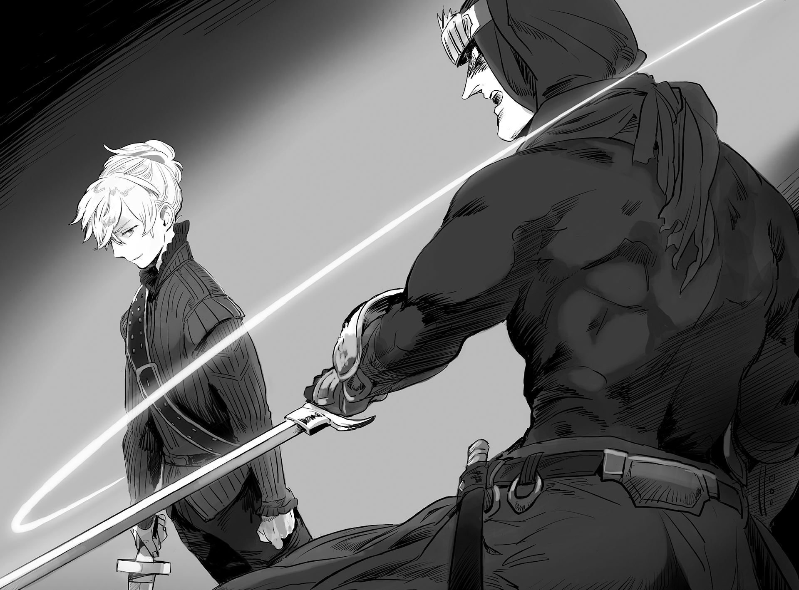

Chapter 4 – Defensive Battle at the Border
.
Part 1
A numbing silence was ruling inside the room.
The first thing that Baldr had to do after he returned to Antrim was to explain about Agatha’s treatment to Selina and Seyruun.
Selina and Seyruun were both smiling, but they didn’t even try to hide their cold gaze. They were glaring at him but they didn’t say even a single word.
Baldr hardened his resolve and yelled to break the silence.
「I’m really sorry!」
And then he played the first move by performing a dogeza in front of Seyruun and Selina.
.
Baldr couldn’t reject Alford’s intention and in the end he agreed to take Agatha as his third wife.
In the custom of Mauricia’s nobility, noble had the right to send reinforcement to other noble who they had broken off relationship with. Similarly there was a right to freely send reinforcement to their relative who was in danger.
With this Baldr became the son-in-law of Alford. The two of them were in a relationship that could send reinforcement to each other.
In itself it could be said as an extremely great diplomatic result.
The conservatism nobles who tried to trap Baldr would surely hesitate to openly pick a fight with Baldr now that he had become a relative of Marquis Randolph.
In addition the backing of Randolph House was a very reassuring guarantee for Antrim that was faced with the approaching danger that was Haurelia Kingdom.
However, it was a different matter whether all those were enough to convince two maidens in love or not…….
.
「Ya are really gutsy aintcha.」
「Ufufufufufufufufu……young master, you will have to be punished once more for this won’t you?」
The two were clearly giving off black aura on their back, but Agatha refuted at them head-on.
「Baldr-sama not only saved me, he even said that he will love me. So can I ask the two of you to not torment him even more than this?」
She said that and pushed her huge breasts that were unbalanced with her small body to Baldr’s right arm tightly.
Seyruun and Selina were unconsciously groaning in admiration at how sly she was acting.
「No no, I’ve never said anything like that didn’t I?」
Baldr didn’t have the leeway to leisurely enjoy the sensation of breasts that should be a joy for man.
「Didn’t you say that you will treasure me for life?」
「I-I said that I will treasure you but……」
「Aaa~~n?」
「Hiih!」
When he noticed, the corners of the eyes of Seyruun and Selina had been raised like when the clock’s hands were pointing at 1.50 AM.
Baldr raised a pathetic scream at the furious glint from the two’s murderous gazes and he backed away.
(This is it! This is what I’m looking for!)
In the meanwhile, Agatha whose dearest wish to bully Baldr was granted by making use of the two was emitting a satisfied aura with a bright smile that could only be possessed by a happy woman.
It went without saying that her expression was enraging Seyruun and Selina even more.
Baldr went out with a new subordinate that hadn’t worked with them for long and then said that he would make her his wife right after they returned. It would be stranger if they could accept this calmly instead.
「Agatha-han, can ya let Baldr go for a bit? It’s not like I don’t understand the situation but, we still gotta settle things ain’t we?」
「Of course I intend to respect the position of Selina-san and Seyruun-san. I am a noble, but in actuality I’m just a nuisance that is pushed on Baldr-sama. I’m not thinking anything like monopolizing him for myself.」
Seyruun and Selina’s face turned deep red with anger at the true intention that Agatha was hiding behind those words.
At a glance, those were gentle words that sound like she knew her place.
However it was actually different.
Although Agatha originally came from a baronet house that tended to be slightly looked down as a noble, it wouldn’t be strange even if she became the legal wife with her status. Her words were the same like she was proclaiming, I won’t act selfishly by making use of my status, but you two should know that in exchange I have no intention of withdrawing back at all.
「E-everyone, get along well with each other! We all should get along. After all we are going to be family from here on. 」
Baldr couldn’t hide his agitation at all that his speech became an incoherent prattling from how desperate he was in trying to mediate the three of them.
He was confident that a hole would be opened in his stomach after three days from all the stress if the three of them entered an all-out war.
「Shut up ya cheater.」
「……I have no excuse.」
However even that effort was exceedingly meaningless.
Selina drew near Agatha with her canines exposed.
「Baldr is a fine man, and of course ya are feeling thankful to him after gettin’ helped from yer family when they aimed at yer life. But can ya seriously say that ya are in love with him as a woman?」
For the sake of argument, it could be said that it couldn’t be helped for Baldr to marry Agatha.
Even so, for the two of them who loved Baldr from their heart, they absolutely needed a proof that Agatha wasn’t a parasite who was only making use of Baldr to protect herself.
Thinking normally, Baldr was frankly an impossibly great catch.
He was already a viscount at this age, in addition he was now the son-in-law of Marquis Randolph who was one of the ten great nobles. He was also a wealthy merchant who kept building numerous new industries. Calling it fortunate to be able to marry such a rich and powerful man was still understating it.
That was why, it was Selina and Seyruun’s pride that they weren’t approaching Baldr with the hope of receiving benefit from their association with him. They were resolved to remove any woman who didn’t share such awareness with them even if they had to go against Baldr’s will.
Of course Agatha was also fully aware of that.
Rather it could be said that there was nobody than Agatha who knew better how great the economic power and political power in Baldr’s hand.
Agatha chuckled with a bewitching smile and her white finger calmly pushed up Baldr’s chin from below.
「How insulting. I believe that my love toward Baldr-sama won’t lose even against the two of you though. I even wish to bear this person’s child for his sake.」
And then she leaned forward with a very natural movement and turned the head of panicked Baldr toward her before she plugged up his lips.
「Whaa-!」
「Muguuh!」
Agatha kept her tight grip on Baldr’s face with a strength that didn’t suit her small stature. She pried open Baldr’s lips and inserted her tongue into that oral cavity following her passions.
The sweetness of her lips and the taste of saliva that was like a narcotic that made his head dizzy made Baldr fell into a complete panic without even any time for resisting.
(What why how did it turn out like this? It did turn out how like this?)
(Aa~~~n! This troubled and embarrassed face is also un, unbearablee!)
The anger of the two who were shown this completely unexpected deep kiss was beyond measure.
「KILL YOU!」
The two’s faces turned demonic like a demon god. But Agatha’s red tongue licked the string of saliva that was caught on her index finger as though to show off to the two.
There was no way the two wouldn’t react at Agatha’s obvious provocation.
「Punishment to cheating.」
「……No mercy.」
「Lies! Is this the flow of events where I’ll get punched?」
Even though the choice he took should be for the sake of Agatha, and also for the future of Antrim, and his future with Seyruun and Selina.
Thinking logically, Baldr’s decision was completely in the right. But unfortunately, the present situation was about emotion.
「SOMEONE SAVE MEEEEEEEEEEE!」
There was no denying that this was unreasonable, but there was not a single person who felt sympathy toward Baldr who was surrounded by beauties.
(Aa, even when getting beaten up like this, you are just lo – ve –ly!)
──Though it seemed there was one person who was excited.
.
The knocked down Baldr was brought to his bedroom. After the three maidens who were left behind gathered at the living room, Agatha suddenly threw herself on the floor and apologized to Seyruun and Selina.
「Forgive me for getting carried away-!」
「Eeee~~~~?」
Agatha who was clinging on Baldr while absolutely showing no intention to yield the initiative until just now suddenly changed 180 degrees. The two were completely struck dumb.
「I actually don’t care at all about competing with the two of you to win over Baldr-sama’s affection! I’ll be satisfied with simply troubling him, tormenting him, shaming him, and having him treating me like a lover occasionally!」
Agatha’s frank coming out of the closet made Seyruun and Selina to shriek together.
「EEEEEEEEEEEEEEEEEEEEEEH!」
Selina was barely able to recover her composure a bit earlier and urged Seyruun to boil a tea.
As expected even Selina needed to prepare her heart for a while until she was able to accept Agatha’s coming out.
「……In other words, ya are, a sadist ain’t ya?」
Even after accepting the tea with a calm expression, the clattering sound that came from the shaking cup was eloquently indicating how shaken Selina was.
「……I never thought that I would have this kind of fetish. But, I’ll feel an itch when seeing Baldr-sama. I can’t bear this feeling to bully, bully, and bully him and make trouble for him. At that day when he said……spare meee with face red in shame──I got wet.」
Agatha said that with an erotic expression. Even Selina was creeped out.
By the way, Selina who couldn’t bear the stimulation anymore was going 「Ufufu……young master, that’s why I told you, you mustn’t feed an animal that you don’t know about」 to escape from reality with everything she had.
「In other words you were acting completely belligerent just now was……」
「Yes, it was very delightful to trouble Baldr-sama. Just from looking that adorable face twisting with shame and terror, I……I……!」
「Aaaa! Please! Don’tcha speak anymore than that!」
Selina desperately stopped Agatha whose cheeks were starting to blush sensually.
If she didn’t do that, she got the feeling that she would also get infected by this pink aura.
「Ah, but I’m serious when I say that I love him you know? Sorry to sound so cliché but, I don’t mind even if I die if it’s for his sake.」
Those words were closer to a show of loyalty instead of love, but unfortunately Agatha didn’t know of other way to express her feeling than that.
「Then, ya aren’t that interested to fawn at Baldr like lover?」
「I won’t say that I’m completely disinterested but……my priority for that is low.」
Picking a quarrel with Selina and Seyruun to toy with Baldr was several times more delightful than that.
Something eerie ran through Selina and chilled her back. Her instinct was telling her that she shouldn’t turn this woman into enemy.
「……Then, best regards……」
Ability-wise and emotion-wise, Agatha would surely continue to be a good partner for Baldr. Furthermore she was a precious existence in regard that they didn’t need to worry that she would monopolize Baldr.
Selina thought that they should pretend to not know about her little abnormality.
She could only resign herself that the damage Baldr would shoulder as the result of this was simply him reaping what he sow.
「I can bully him while Selina-san can console him afterward……I think we can build a win-win relationship between us! That’s why let us work together from here on too!」
(No good……this woman ain’t good……)
Selina couldn’t stop the heat at the corner of her eye from welling up when she imagined the trial that was waiting for Baldr, but she didn’t feel like getting in the way of Agatha’s plan at all.
(──Because, a pervert is scary.)
Selina decided that she would at the very least be a bit kinder to Baldr.
.
Part 2
The marketplace at the morning was filled with noises.
There was a large man amidst that leading a conspicuously large merchant caravan.
Dario weaved through the crowd of people that were coming and going without pause and called out to that man.
「Sorry boss. I have a brother-in-law who moved here from the village, can boss make use of him at your place?」
「Ou! Isn’t this old man Dario. Nice timing, I’m troubled right now for a lack of worker. It’s honestly a big help!」
The boss answered with an innocent and amiable smile.
「Are you Dario’s brother-in-law?」
「My name is Solbe. I swear I’ll work hard so……」
.
The man who introduced himself as Solbe was none other than Sobat.
Introducing someone to work like this wasn’t something unusual at a remote region. The person who got introduced would be as trusted as the person who introduced him.
The character evaluation of Dario at Gawain was extremely high. Exactly because of that, Sobat who was introduced by him could slip between the merchant who sold goods to the border zone.
Of course, if the person who got introduced caused a problem, the person who introduced him would also get asked to take responsibility.
Because of that, normally anyone would only introduce someone who they could trust completely.
The boss of Torado Company that was entrusted with delivering food to the border garrison easily trusted Sobat because of this.
(Now then, everything is going as planned until here but……)
The guards weren’t so foolish that they would allow a merchant to see the guarded border area from nearby no matter how familiar he was.
(If possible, I want to finish this without troubling Dario any further……)
If Sobat was found out as a spy, Dario might get sentenced to death.
Although he understood that he shouldn’t be sentimental like this, Sobat wished to avoid destroying his old friend’s future. Of course, if it was necessary in order to accomplish his mission, he didn’t intend to hesitate in sacrificing Dario.
(The rumored spy killers──I wonder how far I will be able to trick them?)
Antrim had consigned all the spies who were sent from various countries to here into oblivion. Would he be able to expose that veil of darkness, or would he also end up as a part of the mountain of corpses?
Sobat hardened his resolve to deliver the information to his lord even if he himself died in obscurity.
He had to accomplish his mission no matter what by staking his pride as the head of intelligence that had served Savoie House for generations.
At this time, it wasn’t just Savoie House that had their eyes on Antrim.
The leader of pro-war faction, Marquis Selvi was the one who wished to try something here the most, but Selvi House that was renowned for their militarism had no shadowy unit for gathering information.
In the first place Savoie House that possessed an intelligence organization was an exception. Most nobles gathered information mainly by using their connection with their relatives or buying information using money from outsider like information broker.
Because of that, Marquis Selvi refrained from directly sending spy here.
The heat from the incident when Torus and his men were annihilated was still lingering also played a large part with Marquis Selvi’s refrain.
Even so there was no option of simply remaining a spectator without doing anything.
Requesting Savoie House to investigate was also a part of that. There was one other thing. The slight information that they barely able to gather managed to draw the interest of a reliable party.
It was the secret service of Haurelia Kingdom, aka The Eye of Tamil. They managed to obtain the cooperation of that organization.
At first the attention of The Eye of Tamil was drawn to the development of Cornelius territory and the alliance between Mauricia and Sanjuan, but their sense of danger was finally roused because not a single spy managed to return alive from Antrim.
And so just the other day, expert spies who were also specialized in battle headed to Antrim.
There was a possibility of them meeting the same fate like the previous spies if they simply tried to cross the border, so they were infiltrating Antrim by disguising themselves just like Sobat.
.
「There are a lot……」
The amount of food that was transported made Sobat to feel honestly surprised.
This much food could feed five hundred people at the very least. No, perhaps it could feed a thousand people.
「Are you surprised? Well, it can’t be helped if you see this in a tiny remote region like this.」
The boss said that in a good mood while watching the surprised Sobat.
「It wasn’t like this until quite recently. This place was just rural area that was abandoned by the kingdom, a tiny and declining place that anyone won’t give a second glance. But since the feudal lord changed, it’s like this place is reborn.」
「You mean the Viscount Antrim, Baldr-sama.」
The boss’s face broke into a happy smile at Sobat’s words.
「Yeah, so you know huh. Since then even this abandoned place has more soldiers, more work, and more residences. Anything and everything is going well. I think you made the right choice relying on Dario to work here.」
「It’s just as you say……」
However Sobat couldn’t honestly agree with that inside his heart due to his standing.
The enemy’s growth meant loss for ally. The increase of Antrim’s defensive strength meant the increase of threat toward Haurelia Kingdom’s national defense.
The more he heard, the more he felt it would be dangerous to keep ignoring Baldr.
Based on what Sobat knew, there was no politician who could revive a territory to this degree within such a short time. There was also no military general who could expand the defense capability of an area like this.
But Antrim territory right now were accomplishing both things.
(Just Cornelius territory is already a tough opponent. If even Antrim is getting fortified, it will throw Haurelia’s tactic into chaos from the foundation.)
「What’s more the feudal lord is generous, he is lending us horses and cattle with cheap price. There are even merchants from the capital coming here to sell us good quality fertilizer. I’m already looking forward to the harvest. Surely it will be an abundant harvest that can’t be compared with the past.」
「It’ll be wonderful to be able to eat until you’re full.」
「Ou, we won’t get punished even if indulge ourselves a bit this year. Ha-ha-ha-」
Sobat slightly regretted that he didn’t investigate the connection between Baldr and the capital first.
To think that there was an economic policy between those two operating in such large scale. He never even dreamed that such thing would happen.
However as expected it would be difficult to pursue leads from both sides with the intelligence agency of Count Savoie that didn’t have many members. Sobat was well aware of that.
Right now the biggest priority was to make clear of the security in this Antrim.
.
「Oh! There, we can see it now!」
「……That’s, what is that……」
There was a watchtower that was five meter high. Ahead of it was a white rampart that was continuing to stretch forever. Sobat opened his eyes wide seeing such sight.
This defense facility was clearly surpassing the scale of a viscount territory.
If they could gather enough soldier, this rampart could display enough power to defend against Haurelia’s invasion.
He really didn’t want to believe that Antrim had the number of soldier for that but…….
「I bring food for everyone. This is the order slip.」
「Right, I think you are already aware but, don’t enter the restricted area no matter what.」
「Of course I know that.」
The soldier confirmed the ID of the boss and the order slip that was issued by Antrim government, and then the gate was opened so that the merchant caravan could enter.
There were dozens of soldiers here, including those inside the guardroom. If there were this many guards, in the worst case it would be impossible for him to escape from here…….
While Sobat was thinking that, the merchant caravan was led to the lodging houses that were created for the laborers.
A lot of lodging houses were standing side by side. This many houses could easily house a thousand people. It shocked Sobat once more.
He couldn’t see any sign of people inside. That meant everyone must be working right now.
This many people were working continuously and they even had lodging houses prepared. This wasn’t something ordinary.
He had to find out about what was going on here somehow.
Unfortunately even his fellow workers and the boss had never seen what was happening ahead from this lodging house.
(Even so I don’t get it……the security is certainly strict, but it’s impossible that not even a single one of my subordinates can return with just this much.)
Even without borrowing Dario’s help, with Sobat’s skill it didn’t seem impossible to slip through security of this level.
(There should be some kind of trick here……something that even this me can’t notice……)
Sobat’s mind was filled with deducing the puzzle of the spy killer even while he was silently working to unload the food.
However no matter how much he thought, he was unable to solve the puzzle.
.
Part 3
An accident happened at the afternoon when the sun was high in the sky.
A corner of the heavy baggage collapsed and directly hit the head of Sobat who was underneath it by chance.
The boss ran in panic seeing Sobat lying on the ground powerlessly.
「Oi, Solbe! Are you alright?」
A wooden box that was filled with perishable food hit the head directly. There was no way he was unscathed.
A streak of blood was trickling from the head of Sobat who fainted on the ground.
「Stupid idiot! I had told you guys repeatedly to be careful when packing the crates!」
「S-sorry boss……」
The laborer who was working there turned pale and apologized.
He was suddenly tripped up and his hand reached out to maintain his balance, but the place that he touched was bad. The wooden box shook and then fell like it was in a slow motion. The man could only watch that in astonishment.
It felt like there was an unnatural power at work when he was tripped, but there was no way he could make excuse like that.
The fainted Sobat was laid down on a bed in a hurry and the boss ran away to call a healer. The place turned into a pandemonium and in the end they decided to continue the crate unloading tomorrow.
Fortunately Sobat’s injury wasn’t serious. He fainted but he would surely wake up tomorrow. The boss patted his chest in relieve hearing what the healer said.
──It went without saying that this was the work of Sobat himself.
.
The night grew late. Sobat woke up after checking that everyone had fallen asleep and sensed for any sign of people.
Based from his observation at noon, the guards here only numbered dozens.
(It looks like there is no patrol……)
As expected, there was no way this place had so many manpower that they could also monitor the lodging houses.
Sobat quietly sneaked out of the room without making any sound of footstep. He turned his gaze toward the other side of the lodging house where the curtain of night had fallen.
His eyes were already used to the darkness.
There were several torches lit up, even so they couldn’t completely clear up the area of darkness.
However, Sobat’s business was exactly at the other side of that darkness.
A shrill sound that grated at the ears resounded at that moment.
「A rat! Don’t let it get away!」
Armed soldiers were rushing out from the lodging houses noisily.
(I was found out right after I got out of the lodging……!?)
Sobat felt shocked and cursed his blunder, but he immediately noticed that he was misunderstanding.
Most of the soldiers were heading toward the border.
(So there is another spy……)
It was truly a divine aid. Sobat could move easily with this. Although it couldn’t even become a consolation for him because he still didn’t understand how that other spy got discovered.
「──Who’s there?」
Sobat said while facing the lump of darkness that appeared at the right in front of him.
This wasn’t a regular soldier at the very least. If Sobat’s prediction was right, the possibility was high that this person was from the same squad of the spy who got discovered.
「You seem to be a spy too……I don’t know whose spy you are but you got skill.」
The man stood up while still keeping within the darkness. He muttered with a low voice.
「That dark attire, I take it that you are from The Eye of Tamil?」
「Indeed, and what about you?」
「I’m Sobat, the one entrusted to work in the shadow for Count Savoie.」
The man let out ‘hou’ with deep interest.
「So you are the rumored Owl of Sendia.」
「Although embarrassing, indeed I am.」
The Eye of Tamil was the elites of the elites even within Haurelia Kingdom. Sobat felt surprised that such group knew about him while bowing his head despite the situation.
In the end Sobat was nothing but a private soldier of a count, while The Eye of Tamil was the direct subordinate of the king even if they never appeared openly.
It was only natural to feel happy that such group was evaluating him highly.
「I’m the one who is embarrassed. We are in this state despite being in the mission that his majesty ordered us to carry out.」
The man bit his lip in frustration.
It seemed that it was his comrade who got discovered by the soldiers.
「It doesn’t look like that the security here is that strict though. Just what in the world happened?」
The man’s lips twisted in complete vexation at Sobat’s question.
「──It’s magic. A detection net using magic isn’t that rare, but the detection net here is most likely activated when Cancel is used to it instead. In other words, this is something else that is camouflaged to look like detection net.」
So that was how. If an intruder who could sense mana discovered the magic circle, anyone would think of it as a detection net and used cancel magic to it.
To think that the enemy was monitoring the magic circle for when it was severed using Cancel was something completely unexpected.
If that was the trick, then an amateur who couldn’t sense mana should be able to infiltrate brazenly and acted as he pleased here.
「It seems that isn’t all. Those guys were accurately pursuing us even after we scattered to four directions. They must be using some kind of new technique to be able to do that.」
Actually Antrim’s border security force was using heat source detection and magic cancel detection simultaneously, so either way the possibility of intruders getting away from here was nonexistent.
「What could it be……」
The man silently stopped Sobat from speaking further.
「……Good grief, what is it, they’re so noisy at night……」
The familiar voice made Sobat jerked in surprise.
It was the boss.
He was an upright person and a good boss, so he slept in the same lodging house because he was worried about Sobat.
Sobat was at a loss of how to react at the voice that came from the other side of the corridor.
(──Should I kill him?)
Normally it was only natural to decide to kill the witness. However somewhere in his heart, there was an alarm that was warning him from doing that.
Was it because the boss was Dario’s acquaintance? He shouldn’t be a soft person like that but…….
The man moved without any sound during that brief moment of hesitation.
Sobat thought that he was going to kill the boss. However in the next moment, the man was thrusting his short sword on Sobat’s throat.
「……Be silent. I’ll kill this man if you make any ruckus.」
「Hi-hiiih! You bastard, what are you doing to Solbe……!」
The boss who was yawning with sleepy eyes was unable to stand up in fear seeing his subordinate who should be unconscious was getting threatened by a bandit.
Even the boss who should be used with a brawl was nothing more than an amateur in front of the killing intent of an assassin who was living in the battlefield and in shadow.
「……Don’t notify the soldiers. Consider this man’s life forfeit if you let them know and cause a ruckus.」
「L-let go! A buddy asked me to take care of that guy. Just take me if you are going to take someone hostage!」
Even though the boss was unable to stand up at all from fear, he was still saying that desperately. Sobat was secretly astonished by the boss’s caliber.
There wasn’t that many people who could disregard their own life in this kind of despairing situation.
That meant that Dario was one of those few people who were able to build this kind of human relationship.
Sobat had no regret making use of the friendship between Dario and the boss, even so he couldn’t avoid from feeling guilty.
「Hmph, there is no way I’ll bring along a coward like you.」
The man said that and told Sobat to follow him with his eyes.
Sobat didn’t understand what was the man’s plan, but he instinctually sensed that he should obey right now.
The man leaped into the darkness while still holding Sobat.
「So-Solbe! Dammit!」
The boss cursed with a trembling voice. When they couldn’t see him anymore, the man and Sobat ran toward the border.
「What are you planning?」
「……It’s frustrating but, the possibility of me returning alive is low. I’ll have you survive as a hostage so that you can send the information back to his majesty Louis without fail.」
With his inability to understand Antrim’s method to detect spies, the man would definitely be captured before long.
However Sobat who was forcefully taken along as a hostage would possibly be overlooked even if he learned about Antrim’s secret.
That would be even more certain with the boss acting as their witness.
「I swear on my lord’s name that I will bring back the secret of this Antrim.」
Even if Sobat had to lose his life, he still had a method to at least deliver the information back.
The two men with the preparedness to die ran through the darkness of the night in full speed as though it was still afternoon.
.
Part 4
The Eye of Tamil entered Mauricia using various methods and gathered near the border from within. Their number almost reached 30 people.
Even so eight people were already dropping out since they departed from Haurelia at the beginning.
Something like this should be impossible even if they were gathering information in Mauricia’s capital, Cameron.
「It might be possible if it’s another agency, but to think that The Eyes of Tamil of all organizations is being toyed like this…」
The leader of the people in black clothes, Kleman muttered to suppress the fury in his heart.
Most likely this location had also been found out by the enemies.
「It’s certain that it isn’t a normal detection magic. Most likely it’s an unknown magic.」
One of his subordinates quietly expressed his opinion.
If it wasn’t because of that, there was no way The Eye of Tamil that was famous at the underworld could be tricked so skillfully like this.
「It doesn’t matter what kind of trap it is, we will break through it. That is the role of our fang.」
The secret service The Eye of Tamil had roughly four departments.
One was the “Eye” that supervised the intelligence of other countries. The “Ear” was supervising the intelligence within the country. And then the “Head” that was in charge of paperwork and analysis. The last one was the “Fang” that was specialized as military force for unconventional warfare.
The Fang was sent to Antrim this time was the proof that Haurelia Kingdom had resolved to scout this place even if they had to use force rather than just a simple information gathering.
「Very well. Then we will run through the enemy formation without stopping until we arrives home.」
Even if they were detected by a new technique, they had immense confidence in their skill for fighting under the night’s darkness.
As expected there was no way the enemy had the skill to see through darkness like it was afternoon.
Even if the enemy actually had such thing, they would trample it underfoot and killed them still.
The men rushed toward Antrim’s border without making a single sound.
.
「Around thirty. They are heading straight to here.」
The magician who detected the approaching heat sources reported to Baldr quietly.
「A head on charge huh. Those guys are really confident with their skill.」
With the secret trick of their side, the damage to their side would be minimal if they could destroy the enemies one by one, but the enemies were also human. They would surely play a hand that this side didn’t wish for the most.
「Are we going to give up encircling them?」
Brooks asked that because their own fighting force wasn’t that abundant, but Baldr shook his head in negative seriously.
「No, we will let some slip if we give up surrounding them right from the start.」
The difficult point in counterespionage was how it would be a failure if they let just a single person who had the information got away.
If they carelessly thickened their front line, the enemies would disperse just before the collision. The result from that would be too terrible to consider.
Baldr had no choice but to surround the enemy and then played it by ear from there.
「……Our opponent here is the enemy’s joker. Don’t let your guard down no matter what. They might be the toughest enemy that we can face.」
Most likely this group was an elite group even among the intelligence department of Haurelia Kingdom.
If an unofficial department like the secret service lost their elites, it wouldn’t be easy to replace them. Sanai inside Baldr knew that very well from experience.
Gamou clan that Sanai served had a slight connection with Koga ninja of Oumi.
Even Iga ninja clan that was famous from how Tokugawa Ieyasu was employing Hattori Hanzo had their strength sharply dropping since the revolt of Iga at Tensho Era when they were devastated by Oda Nobunaga.
It was also clear that they were forestalled by Koga and Sanada seeing how they were unable to recover the strength that they had in their heyday until the world of Warring States was over.
Baldr intended to give everything he had to annihilate this group for the sake of guaranteeing the security of Antrim from here on.
「Brooks, take care of the left wing while Nelso is at the right wing. Don’t let even a single one of them go back alive!」
「By your will!」
.
The outfit of The Eye of Tamil was really similar with ninja.
They wore black clothes and a hood, a metal plate on their forehead, hand protectors that covered their hands and wrists, greaves on their legs. Baldr secretly gulped seeing them taking a stance with their short sword.
However from the perspective of simple fighting strength, it was far easier to fight ninja than Maggot. He was surprised, but there wasn’t any reason to fear them.
「Sorry but, I don’t have any leeway to be merciful to enemy.」
After saying that, the front line of the soldiers that Baldr was leading slowly drew their bow to the limit.
The Eye of Tamil’s members who were silently gathering information while looking for a path to escape showed no sign of noticing it.
More than ten arrows were fired. They finally noticed the attack by the sharp sound of the arrows cutting through wind.
「W-where? From where the arrows came?」
The attack came from a space where there wasn’t anyone. As expected, even The Eye of Tamil couldn’t hide their surprise.
「──They got us. Cancel!」
The magic was torn apart. The layer of cold air and the layer of warm air were dispersed.
When there was a temperature difference between the lower surface and upper surface, light would refract and the image of the lower surface would rise up.
Due to this mirage phenomenon, their eyes were only taking in a surface where there was nothing.
Because they noticed that their location was detected by using magic cancel, The Eye of Tamil was unconsciously avoiding from using magic cancel.
The enemy completely used it against them. Kleman gritted his teeth at that realization.
His comrades that already numbered few were reduced even further by four due to this attack.
「Don’t let your guard down! They’re different from the usual muscle-brain!」
If the enemies were simple knights who took pride in their skill, they had many methods to confound them.
However, this feeling of the unknown that felt as though they were facing the same secret service like themselves made Kleman nervous.
He had the premonition that the whole squad would be annihilated instantly if they let their guard down.
「──Show them how dangerous the Fang is when we are serious!」

Kleman and his men threw smoke bombs simultaneously and then charged toward Baldr and others who were blocking their path of escape.
.
「The enemis are charging!」
Even with magic sensing the enemies, they couldn’t confirm it with their sight blocked.
「Not bad.」
Furthermore the enemies didn’t scatter to all directions but charged with all their strength to a single direction. It was as though they were aware of Baldr’s plan to surround them.
If he allowed them to break through like this, Brooks and Nelso who were going around from the sides wouldn’t make it in time.
「Gyaah!」
「Shit-! I can’t see-!」
Several of Antrim soldiers who were agitated got taken by surprise and were cut down.
The Eye of Tamil continued to run forward without even looking back.
Even if the unknown technique was detecting them, if they made the situation one that couldn’t be dealt with, they wouldn’t fall against the troops of a backwater place like this.
They finally got out of the smoke screen and thought that they had broken through the front line of the enemies, but then a flash assaulted them.
Bullets of various sizes pierced The Eye of Tamil that was skilled in close range combat. It was accompanied with repeated sounds of explosion.
Anti personnel landmine Claymore. The inferior versions of it were ignited simultaneously.
「Fuu……we somehow made it in time.」
Baldr stabbed a man with his sword and wiped his cold sweat.
This was one of the gunpowder weapons that were still in the middle of test, but it was fortunate that he arranged them for this ambush.
The trait of this weapon was its extremely high change to inflict injury despite its low lethality.
Even a bullet that was only the size of a pachinko ball would deal a deep wound if it was accelerated and punched through muscle and flesh.
The Eye of Tamil’s members were dropping like flies. Brooks and Nelso who caught up from behind attacked them.
.
「Don’t falter! Death group fourth!」
「Oou!」
Kleman realized that it was already impossible to fight back using normal method. He chose to use an uncommon fighting method. He ordered everyone to sacrifice themselves to allow just a single person to escape alive.
「Go ahead!」
A wounded man tore the throat of an Antrim soldier with his mouth even with a spear stabbed into his stomach.
It was truly an inhuman order that ordered the men to take down the enemies with them.
「Don’t aim at the stomach! Cut their neck! If you can’t then take distance!」
Baldr yelled toward his soldiers who were getting taken down one after another along with the enemies.
He only had few soldier in his employment. He sincerely refused for that number to be reduced even more than this.
「This is why it’s troublesome to fight shadows!」
Soldier with the preparedness to die couldn’t be underestimated at all no matter how weak they were.
Baldr ordered the soldiers with low skill to withdraw for the moment and chased after The Eye of Tamil with his remaining few elites.
.
(……They withdrew the soldiers just as expected. We have a chance to get away with this.)
Kleman gloated.
In this situation, the enemy should use soldiers with low skill to be disposable wall instead.
Even if it was only a little, crossing sword would still consume time. That little time would be very precious for Baldr and his elites who were chasing behind using body strengthening.
If the enemies sent their whole troops without any hesitation, their chance of going back alive would be extremely low. This was the ideal development for Kleman.
His remaining comrades were twelve. This should be a number that was hard to be brought down without leaving even a single one alive.
「Death group, third.」
Three men ran to different directions after Kleman gave the order.
Baldr with his few men would have to split up with this. He would take advantage of how the enemy force was split up.
Kleman knew that if he could cause the pursuer to hesitate and anxious even just for a few moments, it would become a seed that allowed him to get away with his life at the critical time later.
However Baldr yelled without hesitating at all.
「Brooks, chase to the left while Nelso, chase to the right! The rest of you follow me!」
The three men were already pierced by sword when Baldr finished saying that.
「Tsk! So they don’t take the bait」
Kleman clicked his tongue at how fast Baldr made his decision.
Even though Baldr still looked like a child, his instinct was sharp like an old soldier.
If his subordinates were chased only by a single person each and got defeated, there wouldn’t be anyone who got in the way of the pursuit.
Normally the pursuer would want to make doubly sure by sending two people after a single person, or if possible they would send three or four people for each person.
If they did that, the main force that was pursuing after them would become fewer in number. At the same time it would plant an anxiety of what if the enemy got away from them into the heart of the pursuers. And yet the pursuer only sent a single person each for the decoys.
「Death group, second.」
Kleman gave the order even though he felt dubious that it would have any result.
After all they also wouldn’t be able to avoid annihilation by doing nothing.
Another three men crushed the medicine that was placed at the back of their teeth and swallowed it.
「NUOOOOOOOOOOOH!」
The color of insanity dwelled inside the men’s eyes.
The medicine that they swallowed was a mixture of stimulant and narcotic.
It turned them into berserkers that would continue fighting until the moment of their death without feeling any pain. Even an attack that could make average person died instantly wouldn’t slow them down.
Its flaw was that they lost their ability to think calmly. The men’s pure strength itself was lowered instead.
「Don’t take them head-on. Cut off their head or aim at their legs!」
「Shit! Get cursed by an old witch damn you!」
Kleman spat out a curse from his birthplace at Baldr who kept giving the appropriate instruction.
Normally the enemies would be greatly shaken when facing soldiers who kept fighting even with wounds all over their body like they were immortal.
However such attempts to shake up the pursuer mentally hadn’t been working at all since some time ago. Kleman couldn’t hide his irritation at that.
On the other hand, these attempts were only something ridiculous for Sanai.
A real warrior was like the dead who had discarded their life even though they were still alive. There was no reason for the dead to feel surprise.
The three men were neutralized without being able to buy any time. Even Brooks and Nelson who were temporarily separated were catching up again to Baldr and others.
「Just a bit more……if only we have a bit more time……!」
The number of the remaining Eye of Tamil was six people.
They were running while surrounding Kleman to protect him. Baldr surrounded them in a half circle shape and narrowed the encirclement bit by bit.
The man who was running at the rear was already seriously wounded that his upper body became soaked red with blood.
Even so the six continued to run single-mindedly.
「Don’t tell me──a reinforcement?」
Baldr talked to himself.
They would only delay the moment of their defeat by just continuing to run like this. It was strange that they were completely focusing on running away like this.
「No, impossible.」
Zirco and others were strengthening their patrolling at the border. There wouldn’t be any significant effect even if several people came as reinforcement at this point.
There wouldn’t be any meaning if there weren’t ten people who came as reinforcement at least, but the possibility of that many people giving Zirco the slip was extremely low.
「Then what is it?」
「It’s here!」
Baldr’s questioning words and Kleman’s delighted mutter came at the same time.
The flame of fighting spirit abruptly burst out from the men of The Eye of Tamil.
The six men who focused in running away shifted into counterattack.
They threw smoke bombs once more. They sharpened the nerves of their whole body like a drill and started attacking fiercely as though to clear up all the resentment they had piled up until now all at once.
Their movement was clearly that of a soldier who was prepared to die. Baldr too was forced to respond with all his strength.
「Don’t be flustered! First focus on protecting yourself!」
Suicide soldiers were certainly a threat, but they still had limit as long as they were human. That time would arrive far quicker compared to normally.
Baldr knew that well.
It was at that moment.
There was a sound of something slipping into the smokescreen. Baldr felt something thrown toward the sky.
Normal people would think that the enemy was throwing some kind of weapon, but Baldr instinctually realized the true identity of that sound and the reason why they continued to run away until this far.
「Shit! I won’t let you!」
「I won’t let you pass here. I have to teach you as your elder that there are many things in this world that won’t go as you expect.」
Kleman laughed fearlessly and felt the greatest sense of fulfillment that he had felt throughout his life until now filling his body.
It was like the reward of challenging the last battle of his life.
If it was now, he felt like he could face any kind of sword expert and handle them with a hand tied behind his back. However──.
『──Are ye perhaps underestimating warrior?』
If he thought that he could defeat a real warrior simply by resolving himself to die, that was nothing but an excessive hubris.
Even Kleman noticed the change in Baldr’s aura.
Kleman felt a sword aura that pierced into his skin like an electric shock. It told him of the gap in strength that he couldn’t possibly match.
Even so, Kleman believed that he would be able to defeat his opponent if he aimed to take him down together with him.
Resolve and determination would occasionally allow human to surpass their limit.
Many times Kleman had witnessed monsters who could survive for a while even after losing their lower half or monsters who continued fighting even while their entrails were dangling out from their belly.
Even if his heart was pierced, he would thrust his blade into Baldr without fail.
As long as he could protect his brain, he had the confidence to continue fighting.
『Naïve.』
Sanai also knew only too well about such thing.
In battlefield, it wasn’t just about the matter of killing the opponent. Taking the opponent’s head was also the warrior custom.
They weren’t allowed even a single instant of letting their guard down until they raised the proof in their hand. Sanai was equipped with the technique to guard against the opponent’s attack until he took off the opponent’s head in point-blank range where their body touched each other.
The simultaneous takedown that Kleman was aiming for was nothing but child’s play for Sanai.
『Death isn’t something ye resolved yerself to accept, it’s something that ye wrench away from the heaven. Ye won’t be able to defeat a warrior when ye don’t even understand that.』
Sanai would have already died a hundred times over if he could obtain a place to die with just that much.

To be unable to die even when they were looking to die. The caliber of warrior led to such sinful karma. That was why warriors like Kani Saizou and Maeda Keijirou were unable to obtain a place to die in the battlefield and ended up dying a on their own bed.
To be able to die when they wanted to die could only be called a divine blessing for a warrior.
Kleman didn’t understand that at the slightest.
「What’s wrong? Keep trembling over there if you are unable to move!」
There was nothing better for him if he could earn more time because his opponent feared his resolve to take him along to hell with him.
Kleman thought that the boy was scared of him and provoked him in contempt. Sanai felt slightly irritated by that even though his opponent wasn’t a true warrior.
『It’s already over though.』
「What are you saying?」
In that moment, Kleman’s head was pulled by gravity and fell to the ground. The sarcastic smile was still affixed on his face.
Around ten seconds had passed since Sanai unsheathed his sword in a speed that surpassed the limit of eyesight.
.
──There was an anecdote that was passed down at Aizu where Sanai lived.
A thief who sneaked into the castle was captured. Bound in rope, the thief was used for trying out a new sword that was forged by Furukawa Kanesada, a master blacksmith that was the pride of Aizu.
The thief was slashed along with the rope. He ran for around 3 chou without noticing that he had been slashed before he died on the spot. (TN: 1 chou is 109.09 meters)
That was the origin of the story of 3 Chou Dropping that the local elders often told.
.
「So that’s what these guys were waiting for.」
It seemed they had spent too much time.
A hawk was flying far away at the sky.
Most likely the sound of something slicing through the wind a while ago was when a letter was thrown toward that hawk.
「Shit! It’s too far!」
Brooks grinded his teeth seeing the hawk’s figure that was disappearing into darkness.
With this much distance, attack magic would lose its strength and had no effect.
Moreover, a trained hawk would have learned how to protect itself by evading attack like arrow or the like.
If they had several expert archers, then it might be possible to shoot it down but…….
「Follow it.」
Baldr started running with a few words.
Certainly by using body strengthening, they wouldn’t be inferior in speed.
But if the hawk flew higher than this, human who was crawling on the ground wouldn’t have any more way to lay a hand on it.
Brooks and Nelso were about to give up.
But, the closer they got, the hawk’s altitude was gradually declining instead of increasing.
Furthermore even its speed was dropping. The two couldn’t hide their surprise with how they were immediately catching up to the hawk.
「What kind of trick is this?」
「I made only the air around the wings to be thinner. If the hawk lose the dynamic lift, of course it will be hard for it to fly. Though it was dangerous just now. It would get away if only it was a bit farther.」
「???」
Brooks and Nelson looked at each other. And although they still didn’t understand the theory, they accepted that this was the doing of their lord.
.
Part 5
Around that time, Sobat and the survivor of The Eye of Tamil──he was called Onsa, but it seemed that wasn’t his real name──were speechlessly holding their breath seeing the border area that was accidentally becoming less guarded because of the battle between Baldr and Kleman.
The plain of Antrim that should be an empty lot until half a year ago was being constructed for a large scale open battle. The scale of this construction was enough to meet several tens of thousands soldier easily.
Although most of the construction was only simply piling up sandbag, but there were also strange iron wires that were rolled around and stretched to form a fence to complement that.
The structure was extremely simple. Blacksmith of sword and armor would scoff seeing it, but when the two saw this simple thing being set up like this, they realized just how brutal the effect would be when hindering an army’s movement.
In addition, there were moats that were dug like pathway between the piled up sandbags. The pathways were laid up so that when the formation was broken through, it would be possible for the defender to retreat swiftly.
The two couldn’t even imagine who in the world was thinking up to construct this kind of novel field of open battle.
What attracted their attention even more was that the defensive line wasn’t formed of just one line. They could see semicircular defensive positions here and there. The locations of those positions seemed to be sticking out
Making that kind of protruding part might lead the enemy to crush those positions one by one. This kind of thing was thought as a stupid plan in Haurelia Kingdom.
But, by intentionally making the enemies concentrated their attack to the protruding parts like this, it would make the enemies exposed their sides to attack from allies. And when it was time for counterattack, those positions could also become a base to launch attack from. This was the practical application of fortification technique that Sanai was familiar with from fighting in the Warring States period. That kind of position was optimal to send out cavalry from.
Although Sobat and Onsa had no way of knowing the effectiveness of that.
In addition there was a line that looked like a waterway stretching toward Potomac River. The two wondered if the enemies were planning to turn the trench into moat by flooding it with water, but the depth of the trench seemed lacking for something like that.
「……Is that a ballista?」
Onsa nodded at Sobat’s muttering.
「I think so but……I can’t even imagine what they are going to use it for.」
Ballista should be used for sieging a castle, but for some reason there were several ballista set up here. The two of them were puzzled by that.
「This sight is more than I expected. The rumor that I heard from my subordinate is true.」
「……Dangerous. If this defensive line is completed, the kingdom’s force might be tied up at Antrim and our strategy will crumble.」
Haurelia Kingdom’s strategy was fundamentally to breakthrough Cornelius and forced Mauricia Kingdom into a decisive battle at Marlborough Plain. The prerequisite for that was they had to capture Antrim early no matter what because Antrim could possibly be used as enemy base to sever Haurelia’s lines of communication from the rear.
If that prerequisite was thrown into disorder, Haurelia would have to reconsider their whole tactic from the start.
Sobat and Onsa was trembling from the bottom of their heart after realizing just how vital the information that they had grasped.
If Haurelia Kingdom’s army invaded Antrim without knowing anything, they would consume a lot of time and receive unexpected damage. In the end they would be defeated by Mauricia Kingdom.
After all the passing of time would become the ally of Mauricia Kingdom that possessed economic strength that completely surpassed Haurelia Kingdom.
「……As expected, they won’t just let us get away easily.」
Onsa muttered in regret.
And then he activated body strengthening before carrying Sobat under his arm.
「Pretend to be a hostage quietly. You will have to bring back the information in case I don’t make it.」
Actually the possibility of Onsa going back alive was smaller, but Sobat only nodded without saying anything.
Several minutes ago, the battlefield control operator who detected the two’s heat source had given a warning to Baldr right after they caught the hawk.
「Good grief. So there is still leftover.」
It wouldn’t be a laughing matter if they let a spy got away after coming this far.
Baldr, Brooks, and Nelson headed toward Sobat and Onsa speedily like a wind.
.
「──Wait!」
Of course there was no idiot who would wait when he was called to wait.
Onsa yelled back while pointing his blade on Sobat’s throat.
「Give up chasing after me if you don’t want the hostage to get killed!」
「……That’s not a request we can grant.」
The attack of Baldr and the others were turning dull even after saying that.
If possible they wanted to save the hostage alive. Putting it another way, they still had the leeway to do that much.
「I see. I thought it’s strange that there is still another one appearing at this late timing, so that’s how it is.」
This last spy must be separated from his comrades, so he was forced to resort to kidnapping like this. Nelson suggested the use of Brooks’s trump card, the partial strengthening at this juncture.
「This guy seem to be the last, so there is no need to be stingy here isn’t it, Brooks?」
It didn’t matter how skilled that spy was, it was unthinkable that he would be able to dodge the full powered attack from Brooks who specialized in battle.
That was also the choice with the greatest chance of rescuing the hostage.
「……Besides, we also can’t just let that hostage go back normally after seeing this place.」
Sobat and Onsa clicked their tongue inside their heart after hearing Nelson’s words.
And then from the way Nelson spoke, it meant that the remaining The Eye of Tamil had been annihilated.
That was the most shocking thing.
(It seems I won’t be allowed to conveniently return and bring back the information to Dario.)
Sobat was ashamed by how naïve his expectation was.
Thinking carefully, a large scale construction work like this wasn’t known at all by outsider except as a rumor. It must be the result of an unbelievably strict information control.
(Onsa, kill me in a skillful way that won’t expose the fact that we are working together.)
(What are you saying!? Then how will we bring back the information?)
(They won’t let me go even if they rescued me from you. And even if I can escape, it will take too much time. My right eye is an artificial eye. It’s also a magic tool that record what I see.)
If he died as a hostage like this, his corpse would be returned to Dario immediately.
Even if his corpse was inspected, the possibility of his artificial eye getting discovered was low.
Sobat and Onsa were talking with finger signals that were used among spies so that other people couldn’t listen in. They hardened their resolve to fall here in order to accomplish their mission.
「……I’ll ask for the last time. Will you let go of the hostage and surrender?」
「Ridiculous. Don’t think that kids like you can defeat me!」
Onsa replied provocatively. Brooks laughed with a low tone at that.
Actually Brooks himself was thinking that the opponent wouldn’t surrender quietly and he would fight back with everything he had.
「Then let’s ascertain that with your body!」
Brooks partial strengthening had been polished even more since that time at the knight academy. Now it was possible for him to accelerate smoothly without even letting the opponent detected the initial gathering of mana.
However Onsa was also a member of a secret service that was the pride of Haurelia.
He immediately used Sobat’s body as a shield and turned his short sword toward Brooks.
「Tsk!」
Onsa’s reaction was faster than expected. Brooks kicked on the ground and changed his direction.
Spearing the enemy together with the hostage was going against Brooks’s aesthetic.
However the overwhelming reaction speed that Brooks boasted allowed him to change directions repeatedly to aim at Onsa’s opening.
It was a splendid speed that didn’t allow even Baldr and Nelson to back him up.
Even Onsa who was able to endure three attacks was completely toyed around by Brooks’s speed. His defenseless back was finally exposed.
「Got you!」
Brooks stabbed his spear deeply into that defenseless back.
Even so his spear missed the heart slightly and Onsa avoided instant death. It was due to Onsa’s skill and tenacity.
「It’s mortifying……but, I won’t go to hell alone!」
Sobat’s eye replied to Onsa’s gaze. It said 「Kill me」.
This was the fate of those who lived in the shadow.
He had no intention to feel any regret but, surely his kindhearted friend would be sad.
Even though he should have pulled Dario away from the world of shadow, in the end he dragged him back into it. That was Sobat’s last regret.
「Shit! You worthless bastard!」
Brooks realized what Onsa was going to do and broke into a run, but the time was slightly insufficient to stop him.
Brooks’s spear decapitated Onsa’s head, but Onsa had slit Sobat’s carotid artery a moment before it.
Blood spurted like a fountain. Sobat and Onsa’s bodies were dyed bright red with blood.
(I’ll leave the rest to you Dario……forgive this friend who give you nothing but trouble……)
.
Part 6
The boss returned with Sobat’s corpse at the next day when the time was about to reach noon.
「I’m sorry! Even though I was with him……I don’t know how to apologize to you but, I’m sorry!」
Dario slowly shook his head at the boss who was prostrating tearfully.
「This isn’t boss’s fault. My brother-in-law was just unlucky.」
──That’s right. He was unlucky. And yet, why is your face look so satisfied like that?
Dario understood very well what Sobat was intending to do with his death.
Even so he couldn’t help but feeling an unreasonable anger toward the friend who accompanied him at his adolescent for dying as he pleased while pushing everything to him.
「……Sorry but, I have to bury my brother-in-law at his birthplace, so I’ll close my place for a while.」
「Yeah, just leave your place to me. I’ll take care of it properly until you return!」
It didn’t matter what kind of information Sobat obtained. As someone who was going to leak it out, he couldn’t continue to stay in this city.
Dario apologized in his heart to his son who would have to leave the land where he was born and raised at until now. He nodded silently at the boss and let out a lonely smile.
He got the feeling that his dead friend over there was bowing his head in apology to him even now.